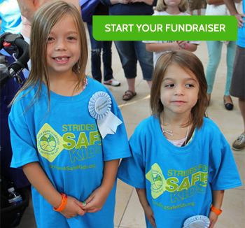

|
Thank you for registering for the Strides for Safe Kids St. Louis! We look forward to seeing you on September 12, 2015. You will be receiving a confirmation email shortly.If you have questions at any time or you would like more information, please do not hesitate to contact us at (215) 230-5394. We encourage you to now set up a fundraising page. It is only through the support of our donors that we can keep children with food allergies safe and healthy. 
Setting up a fundraising page is easy! Just follow the prompts after you login or set up a new account. 1. Create a fundraising page title or team name.
2. Add images, a fundraising goal, and a personal message to your page. 3. Share your unique page with friends and family. 4. Fundraising Grand Prize: $500 Amazon Gift Certificate! For every $100 raised on your page, you will be eligible for a raffle ticket to win our GRAND PRIZE! There is no limit to how many raffle tickets you can obtain! The raffle ticket drawing will occur at the Strides for Safe Kids Philadelphia event. You do not need to be present to win. Questions? Call (215) 230-5394 or email.
|
|
With the support of our donors, we educate families to prevent life-threatening allergic reactions and to be prepared to respond to allergic emergencies. Educating families and communities is essential to saving children's lives and keeping them safe and healthy.
|
|